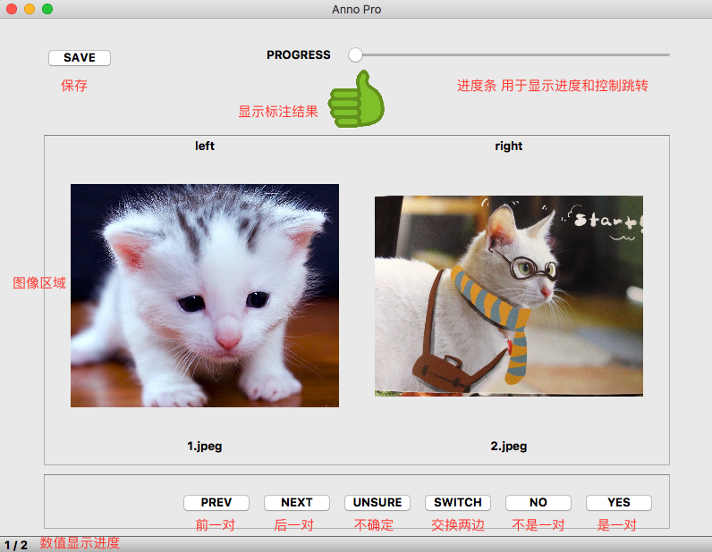
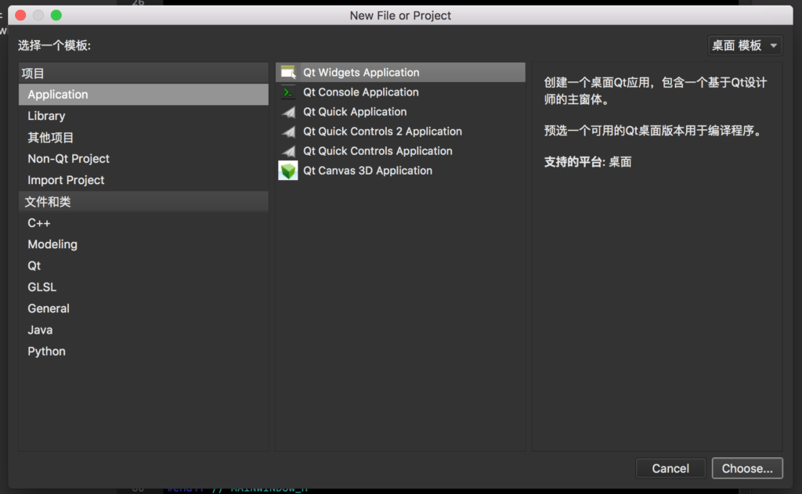
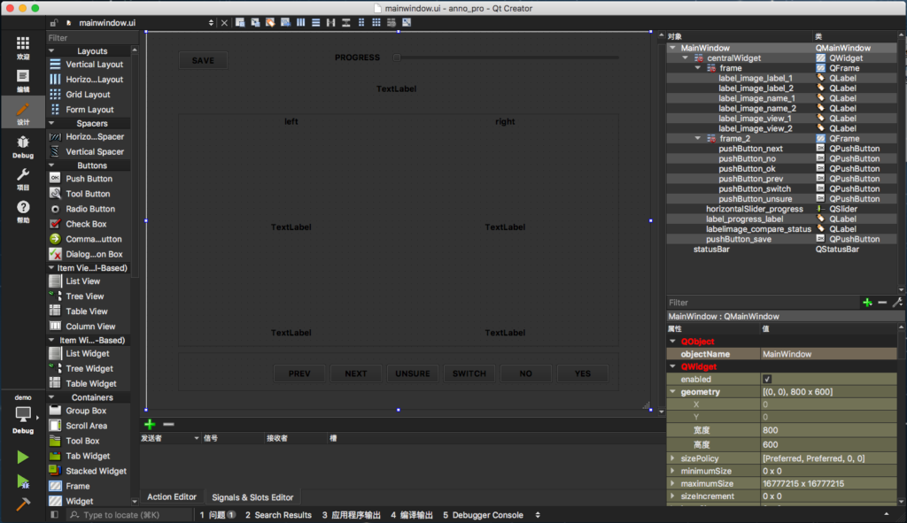
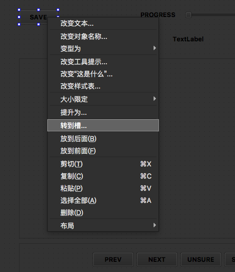
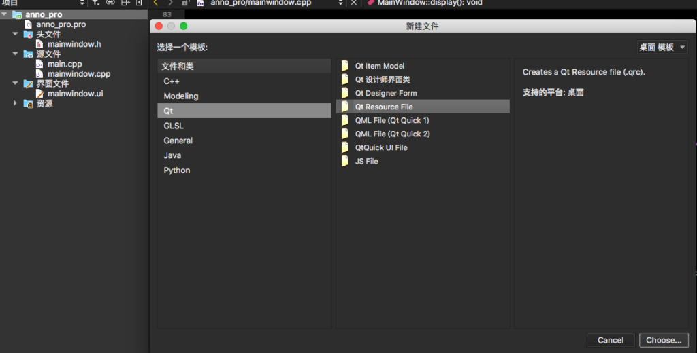
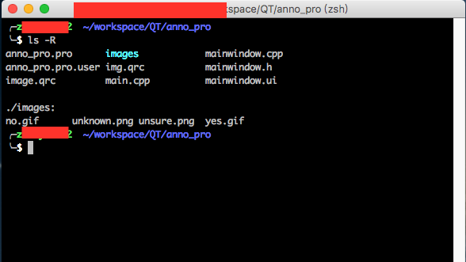
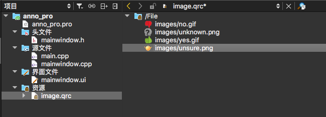
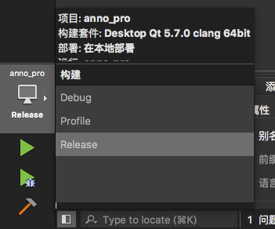

小喵的唠叨话：话说最近小喵也要开始写论文了，想了两周还是没有头绪，不知道该写些什么。恰好又被分配了一点标注数据的工作，于是乎想写点代码，休闲一下。结果也就是这篇博客。对了，小喵对GUI编程一窍不通，只知道Windows有MFC，Mac上的不知道。。。恰好听说过QT，而且知道这个界面库是跨平台的，也就选用了这个工具了。
那么现在开始和小喵一起瞎猫似的捯饬QT吧~ 先看一眼效果图： 
是不是乍一看还挺炫酷。功能上也还好，至少简单的标注工作都能完成了。那么让我们来一步一步的完成这个工具吧。
一、功能需求
这个程序主要的功能是完成一个人脸认证的标注工具。 具体来说，就是给定很多对人脸的图片，要标注一下这一对是不是同一个人。同时，每一对的图片的人脸一张是生活照，一张是证件照，需要同时标注出哪张是证件照，那张是生活照。照片都是经过检测和对齐的，这个工具只需要完成简单的显示、标注、保存记录的工作就可以。 当然考虑到有时候需要标注的list可能很大，可以加入跳转的功能。标注结果都保存在内存，用户可以随时更改，点击保存，则写入硬盘。
二、数据结构
那么是不是现在就可以动手写代码了呢？当然不是！ 小喵写这个软件一共用了3天的时间，第一天完成了一个超简单demo程序，熟悉了一下QT的事件添加，路径选择和显示图片的几个功能。之后又仔细的思考了一下各种数据的结构，才动手做了这一版工具。没有一个清晰的数据的概念，会造成许多的无用功。所以，大家在写程序的时候，要在准备阶段多花一点时间来思考，毕竟写代码才是最简单的事情不是吗？
- 输入数据格式：因为小喵的工作环境下，大家都对linux有一些了解，所以可以自行生成好图片的路径的list，这里统一要求，list必须是偶数行（2n行），代表n对，相邻的图片为一对。
- 标注数据存储：考虑到我们不仅需要标注是不是一对，还得标注哪张是证件照，所以不妨直接在读数据的时候就分成两份，这样就用两个
std::vector<std::string>来存储就行了。 - 标注过程的状态：我们需要知道标注过程中的那些信息呢？主要应该有：总数据量，当前已标注的对数。
- 标注结果：每一对都有一组对应地 结果，考虑到有4中情况：未标注，不确定，不匹配，匹配这四种，我们定义一个枚举的状态表
enum AnnoState就好。之后用一个std::vector<enum AnnoState>来存储标注结果。
三、界面制作
GUI程序的界面一直是个很让人头疼的问题，记得在本科学习Java的时候，需要自己手写一个控件，使用new JButton()类似的方式创建按钮，然后添加到主界面上，位置什么的都得调用这个对象来设置，十分的繁琐。那么QT能不能简化这个过程呢？答案是肯定的。
创建项目->选择Application->Qt Widgets Application。然后项目名改成Anno Pro，其他全部默认设置，就创建好了一个项目了。这个初始的项目里面有3个文件夹：头文件，源文件和界面文件，以及一个.pro结尾的项目配置文件。

既然需要编辑界面，我们自然会想查看一下界面文件了，双击 MainWindow.ui (我这里全部都是默认的名字)。出现的是一个充满各种控件的可视化界面编辑器。

按照我们之前的界面样式，拖动左边的控件，就可以完成界面的编写了。小喵这里只用到了几种控件：
QPushButton：各种按钮QLabel：所以显示文字和图像的区域都是这这个控件QFrame：一个容器，小喵用它只是为了结构上更清晰QSlider：滑动条，小喵用的是水平滑动条QStatusBar：状态栏，这应该是自带的，如果删掉的话，在MainWindow控件点击右键就可以创建了
拖动完成后，双击空间，就可以给空间设置文本，同时注意给每个控件起一个好听的名字（起名字很重要的！《代码大全》中甚至用一章，好几十页的篇幅介绍如何命名）。
至于其他的控件，大家可以自行研究。反正小喵现在的道行应该才是筑基。 那么我们就愉快的完成了界面的编写了~点击左右下的运行图标（三角形的那个），就可以看到自己的运行程序了！
四、数据定义与初始化
我们先前已经分析了我们需要的数据了，这部分开始使用代码的定义这些结构。打开我们头文件mianwindow.h，添加需要的变量，小喵就直接把自己的头文件复制下来了：
#ifndef MAINWINDOW_H
#define MAINWINDOW_H
#include <QMainWindow>
#include <vector>
#include <string>
namespace Ui {
class MainWindow;
}
class MainWindow : public QMainWindow
{
enum AnnoState {
UNKNOWN = 0, // 未标注
YES = 1, // 匹配
NO = 2, // 不匹配
UNSURE = 3 // 不确定
};
public:
explicit MainWindow(QWidget *parent = 0);
~MainWindow();
private:
Ui::MainWindow *ui; // 自带的，ui界面的接口
std::vector<std::string> image_list_1; // 用来存放左边的图片的list
std::vector<std::string> image_list_2; // 用来存放右边的图片的list
int current_idx; // 当前图片对的id
int total_pair_num; // 总共的图片对的数目
std::vector< AnnoState > annotation_list; // 标注的结果
};
#endif // MAINWINDOW_H可以看出，小喵添加了一个 enum 的类型，用来表示标注结果的类型。虽然只有4个状态，我们甚至可以直接约定几个 int 值来表示，但相信我，为这么4个状态定义一个枚举类型是完全有必要的。之后我们所有的成员变量都是 private 的。具体含义，注释中也有写明。
下一步就是初始化了。初始化的过程当然得写在构造函数里，这里，小喵在初始化的时候强迫用户选择一个标注的list，如果不这么做，会有很多的意外情况。请原谅小喵的怠惰。。。
MainWindow::MainWindow(QWidget *parent) :
QMainWindow(parent),
ui(new Ui::MainWindow)
{
ui->setupUi(this);
// 选择输入文件
while (1) {
QString file_name = QFileDialog::getOpenFileName(this, "choose a file to annotate", ".");
if (file_name.isEmpty()) {
int ok = QMessageBox::information(this, "choose a file to annotate", "Don't want to work now?", QMessageBox::Ok | QMessageBox::Cancel);
if (ok == QMessageBox::Ok) {
exit(0);
}
continue;
}
std::ifstream is(file_name.toStdString());
std::string image_name;
bool is_odd = true;
while (is >> image_name) {
if (is_odd) {
this->image_list_1.push_back(image_name);
} else {
this->image_list_2.push_back(image_name);
}
is_odd = !is_odd;
}
is.close();
if (image_list_1.size() != image_list_2.size()) {
QMessageBox::information(this, "choose a file to annotate", "this image list is not even", QMessageBox::Ok);
continue;
}
if (0 == image_list_1.size()) {
QMessageBox::information(this, "choose a file to annotate", "this image list is empty", QMessageBox::Ok);
continue;
}
break;
}
assert(image_list_1.size() == image_list_2.size());
// 初始化其他参数
this->total_pair_num = image_list_1.size();
this->current_idx = 0;
std::vector<AnnoState> annotation_list(this->total_pair_num, AnnoState::UNKNOWN);
this->annotation_list.swap(annotation_list);
display();
}这里用了两个QT的组件：
QFileDialog：这个组件是一个文件对话框，其中有两个十分有用的函数：getOpenFileName用于选择一个文件，并返回文件名；getSaveFileName用于选择一个文件来保存数据，并返回一个文件名。- 这两个函数的参数很多，小喵只用到了前面的3个，用到的参数依次是：父组件，标题，初始目录。其他的参数的功能，喵粉可以去官网查一下。
- QMessageBox::information，这个函数的功能是显示一个消息窗口。四个参数分别表示：父组件，标题，内容，按钮样式。
相信大家懂一点点C++的知识的话，很容易看懂这段代码。 这里就是使用了一个循环，让用户选择文件，如果选择成功了，则读取数据到我们的list中，最终初始化了其他的参数，在调用display函数来显示。这个display函数是我们自己编写的，后面会说到。另外，assert函数是断言，他保证了断言的数据的合法性，如果不合法，程序会退出。想使用这个函数，需要包含头文件 assert.h。
五，添加事件响应
小喵之前了解到，QT使用的是一种信号和槽的事件机制，是一种十分高级的机制。那么有没有什么简单的方法，为我们的每个控件绑定自己的的事件呢？
在界面编辑界面下，右击需要添加事件的空间，然后选择转到槽。这时候会有很多选项，这里直接选择 clicked 就可以。然后你会发现我们的mainwindow类中，多了一个pivate slot的函数（也就是槽函数）。

我们可以给每一个需要添加事件的函数都用这种方式来绑定事件，最终头文件中会出现这样的声明（函数名称的规则是：on_控件名_信号类型）：
private slots:
void on_pushButton_save_clicked();
void on_pushButton_ok_clicked();
void on_pushButton_no_clicked();
void on_pushButton_unsure_clicked();
void on_pushButton_next_clicked();
void on_pushButton_prev_clicked();
void on_pushButton_switch_clicked();
void on_horizontalSlider_progress_sliderReleased();在源文件中，也会生成空的函数定义。我们只需要自己完成函数定义就大功告成！
下面给出的是除了save的所有的函数的定义。主要工作是，给每个事件编写修改数据的代码，而不去负责任何界面相关的部分。各个控件可以通过 this->ui 来设置和获取。使用Qt Creator的时候，要充分利用智能提示。
/**
* @brief MainWindow::on_pushButton_ok_clicked
* 标注为"匹配"
*/
void MainWindow::on_pushButton_ok_clicked()
{
this->annotation_list[this->current_idx] = MainWindow::AnnoState::YES;
++ this->current_idx;
display();
}
/**
* @brief MainWindow::on_pushButton_no_clicked
* 标注为"不匹配"
*/
void MainWindow::on_pushButton_no_clicked()
{
this->annotation_list[this->current_idx] = MainWindow::AnnoState::NO;
++ this->current_idx;
display();
}
/**
* @brief MainWindow::on_pushButton_unsure_clicked
* 标注为"不确定"
*/
void MainWindow::on_pushButton_unsure_clicked()
{
this->annotation_list[this->current_idx] = MainWindow::AnnoState::UNSURE;
++ this->current_idx;
display();
}
/**
* @brief MainWindow::on_pushButton_next_clicked
* 移动到下一组
*/
void MainWindow::on_pushButton_next_clicked()
{
++ this->current_idx;
display();
}
/**
* @brief MainWindow::on_pushButton_prev_clicked
* 移动到上一组
*/
void MainWindow::on_pushButton_prev_clicked()
{
-- this->current_idx;
display();
}
/**
* @brief MainWindow::on_pushButton_switch_clicked
* 交换两边的图片
*/
void MainWindow::on_pushButton_switch_clicked()
{
std::string tmp = this->image_list_1[this->current_idx];
this->image_list_1[this->current_idx] = this->image_list_2[this->current_idx];
this->image_list_2[this->current_idx] = tmp;
display();
}
/**
* @brief MainWindow::on_horizontalSlider_progress_sliderReleased
* 拖放进度条，控制进度
*/
void MainWindow::on_horizontalSlider_progress_sliderReleased()
{
int pos = this->ui->horizontalSlider_progress->value();
this->current_idx = pos;
this->display();
}至此，我们的大体的功能逻辑就编写完了。 那么怎么让界面上显示我们的系统状态呢？注意到了我们上面的每一个函数都调用了display这个函数了吗？这个函数正式负责绘制界面的功能。 部分主要介绍三个函数：
const std::string UNSURE_FILE = ":File/images/unsure.png";
const std::string YES_FILE = ":File/images/yes.gif";
const std::string NO_FILE = ":File/images/no.gif";
const std::string UNKNOWN_FILE = ":File/images/unknown.png";
/**
* @brief set_image 将图像设置到label上，图像自动根据label的大小来缩放
* @param label
* @param image
*/
void set_image(QLabel *label, const QPixmap &image) {
float ratio(0.);
ratio = 1. * label->width() / image.width();
ratio = fmin( 1. * label->height() / image.height(), ratio );
QPixmap m = image.scaled(static_cast<int>(image.width() * ratio), static_cast<int>(image.height() * ratio));
label->setPixmap(m);
}
void set_image(QLabel *label, const std::string image_path) {
QPixmap image(image_path.c_str());
set_image(label, image);
}
/**
* @brief MainWindow::display
* 根据系统中的所有的变量来设置当前界面中的各个部分的内容
*/
void MainWindow::display() {
if (this->current_idx >= this->total_pair_num) {
QMessageBox::information(this, "annotation over", "Congratulations! You've finished all the job! Please save your work :)", QMessageBox::Ok);
this->current_idx = this->total_pair_num - 1;
}
if (this->current_idx < 0) {
QMessageBox::information(this, "annotation warning", "You must start at 0 (not a negative position, I konw you wanna challenge this app) :)", QMessageBox::Ok);
this->current_idx = 0;
}
// 进度条
this->ui->horizontalSlider_progress->setRange(0, this->total_pair_num - 1);
this->ui->horizontalSlider_progress->setValue(this->current_idx);
// 状态栏
this->ui->statusBar->showMessage(QString((std::to_string(this->current_idx + 1) + " / " + std::to_string(this->total_pair_num)).c_str()));
// 文件名
std::string image_name_1 = this->image_list_1[this->current_idx];
std::string image_base_name_1 = image_name_1.substr(image_name_1.find_last_of("/") + 1);
std::string image_name_2 = this->image_list_2[this->current_idx];
std::string image_base_name_2 = image_name_2.substr(image_name_2.find_last_of("/") + 1);
this->ui->label_image_name_1->setText(image_base_name_1.c_str());
this->ui->label_image_name_2->setText(image_base_name_2.c_str());
// 显示图像
set_image(this->ui->label_image_view_1, image_name_1);
set_image(this->ui->label_image_view_2, image_name_2);
// 显示标注结果
std::string show_image_name = UNKNOWN_FILE;
switch (this->annotation_list[this->current_idx]) {
case AnnoState::UNKNOWN:
show_image_name = UNKNOWN_FILE;
break;
case AnnoState::YES:
show_image_name = YES_FILE;
break;
case AnnoState::NO:
show_image_name = NO_FILE;
break;
case AnnoState::UNSURE:
show_image_name = UNSURE_FILE;
break;
}
set_image(this->ui->label_image_compare_status, show_image_name);
}最开始我们定义了4个图片的路径。这可以是绝对路径或者相对路径。我们这里的路径设置的比较奇怪，在下面我们会讲到。set_image 负责将给定的图片绘制到 QLabel 上，为了显示的好看，图像会按照 QLabel 的尺寸来动态的缩放。这样就不会出现有个图像太大或太小的情况了。display 则是负责各个区域的绘制。
还差一步是保存结果：
/*
* @brief MainWindow::on_pushButton_save_clicked
* 保存结果文件
*/
void MainWindow::on_pushButton_save_clicked()
{
QString file_name = QFileDialog::getSaveFileName(this, "choose a file to save", ".");
if (file_name.isEmpty()) {
QMessageBox::information(this, "choose a file to save", "please enter a legal file name", QMessageBox::Ok);
return;
}
std::ofstream os(file_name.toStdString());
for (int idx = 0; idx < static_cast<int>(this->annotation_list.size()); ++ idx) {
os << this->image_list_1[idx] << " " << this->image_list_2[idx] << " " << this->annotation_list[idx] << "\n";
}
os.close();
QMessageBox::information(this, "save", "save result success", QMessageBox::Ok);
}六、添加资源
由于我们的程序是需要publish出去的，因此图片文件等资源，必须包含在程序中。那么Qt怎么添加文件资源呢？
在项目视图下，右键项目->添加新文件->Qt->Qt Resource File。就可以创建一个qrc文件了。

我这里给这个文件取名为image。
之后，建议在项目的根目录里面新建一个文件夹，用来存放资源。小喵的结构是这个样子的：

小喵的项目根目录新建了一个文件夹images，并将图像素材放入了这个文件夹。
之后回到QT，我们刚建好的image.qrc文件->Open in Editor。
先添加前缀，这里写上/File。之后点击新建的/File目录，再点击添加->添加文件，选择我们的素材文件。最终的效果图如下：

之后，我们就可以在程序中直接访问这些资源了。这也就是我们之前的那四个奇怪的路径的由来了。
七、发布
此时此刻，相信每一个喵粉的程序都能在自己的电脑上愉快的玩耍了。这么有意思的程序，怎么分享给其他人呢？
和Windows上常用的VS类似，Qt Creator的左下角有个发布选项：

选择Release，然后构建整个项目就可以了。之后找到我们的程序，双击就可以运行。
这时候你会愉快的把这个程序发给你的好伙伴，得到的反应一定是：这是啥！我打不开！ 为什么呢？ 虽然Qt是一个跨平台的界面库，但如果对方的电脑上没有安装Qt，那么就不能运行。不过不用失落，Qt中早已给出一个绝妙的解决办法。
小喵的电脑是Mac的，所以找到的解决方案也是Mac的，Windows和Linux上也有类似的办法，大家可以自行查找。
http://www.cnblogs.com/E7868A/archive/2012/12/02/2798225.html
参考上述博客，我们使用 macdeployqt 这个工具来处理一下release的程序就搞定。这时候你会发现原本100k的程序变成了22M。但是直接发给别人的时候，是可以直接运行的！
至此，本次的博客结束了。 完整的项目在github上可以下载： https://github.com/miaoerduo/Anno_pro
转载请注明出处~